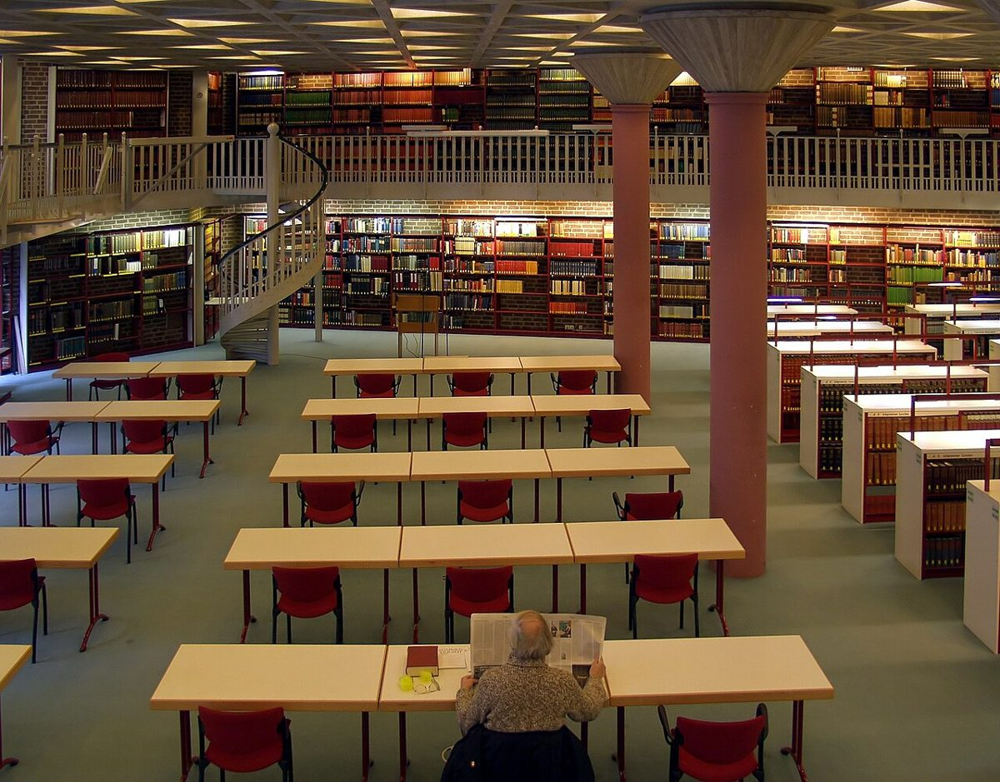

Une Exploration du Cologne Dom : Chef-d'Œuvre Gothique au Cœur de l'Allemagne

Le Cologne Dom, ou la cathédrale de Cologne, est l'un des monuments les plus emblématiques d'Allemagne et un site du patrimoine mondial de l'UNESCO. Sa majestueuse architecture gothique et son histoire fascinante en font une visite incontournable pour tout voyageur. Voici un guide pour vous aider à explorer ce chef-d'œuvre et à profiter au maximum de votre visite.
Conseils Pratiques pour votre Visite
Pour accéder au Cologne Dom, la ville de Cologne est bien desservie par les transports publics. La gare centrale de Cologne est juste à côté de la cathédrale, ce qui facilite l'accès pour ceux qui arrivent en train. Si vous préférez prendre l'avion, l'aéroport de Cologne-Bonn est à environ 15 kilomètres de la ville, avec des liaisons régulières en train et en bus vers le centre-ville.
En termes de meilleure période pour visiter, le printemps et l'automne offrent des températures agréables et moins de foules que pendant les mois d'été. Cependant, le Cologne Dom est impressionnant toute l'année, même lors des froides journées d'hiver.
Les Highlights à Ne Pas Manquer
1. **La vue panoramique depuis les tours** : Une montée jusqu'au sommet des tours de la cathédrale vous récompensera avec une vue imprenable sur Cologne et le Rhin. L'ascension demande quelques efforts, mais le panorama en vaut vraiment la peine.
2. **La châsse des Trois Rois** : Cette relique spectaculaire, censée contenir les restes des Rois Mages, est un exemple remarquable d'art médiéval et un point central de la cathédrale.
3. **Les vitraux** : Les magnifiques vitraux, notamment le fenêtre moderne de Gerhard Richter, ajoutent une touche de couleur et de mystère à l'intérieur sombre et imposant de la cathédrale.
4. **Le trésor de la cathédrale** : Ce musée abrite des artefacts religieux rares et précieux, offrant un aperçu fascinant de l'histoire et de la spiritualité de ce lieu sacré.
Où Manger près du Cologne Dom
Après avoir exploré la cathédrale, ne manquez pas de goûter à la cuisine locale. Les environs du Cologne Dom regorgent de restaurants traditionnels où vous pourrez déguster des spécialités comme le plat typique de Cologne, le «Himmel un Ääd» (purée de pommes de terre avec compote de pommes et boudin noir). Pour accompagner votre repas, essayez un verre de Kölsch, la bière locale légère et rafraîchissante.
En conclusion, le Cologne Dom est bien plus qu'une simple cathédrale; c'est une expérience qui mélange histoire, art et spiritualité. Avec ces conseils et recommandations, votre visite à Cologne sera à coup sûr mémorable.
Haiktec
- Le Guide Pratique pour Petits Restaurants et Cafés : 7 Stratégies Simples pour Attirer Plus de Clients
- Planificateur de Voyage en Forêt-Noire : Budget & Activités pour Internationaux
- Découvrez le Saarland et la Moselle en 7 étapes : Guide pratique pour voyageurs autonomes
Text mit KI erstellt und automatisch geprueft.